以期間限定舉辦「幕間物語宣傳活動 第8彈」。
宣傳活動舉辦中所有Servant幕間物語的AP消耗量變成1/2！
藉此機會滿足開放條件，通過喜愛Servant的物語吧！
※本頁面圖片皆為開發中。會有與實際圖片有所差異的情況。
◆舉辦期間◆
2019年3月20日(三) 17:00～3月27日(三) 11:59
◆對象關卡◆
所有的幕間物語
※也包含自2019年3月20日(三) 17:00開放的幕間物語。
◆有關Servant真名的注意◆
在2018年12月31日(二) 23:00以後新配信的主線故事及期間限定活動、一部份關卡、宣傳活動及召喚中，會顯示隱藏真名的對象Servant真名。
※已經配信的主線故事、復刻活動、一部份關卡中不在此限。
◆開放時間◆ 2019年3月20日(三) 17:00～
◆對象Servant◆
・賽米拉米斯
・南丁格爾
・土方歲三
・柳生但馬守宗矩
・虞美人
・新宿的Avenger(海森・羅伯)
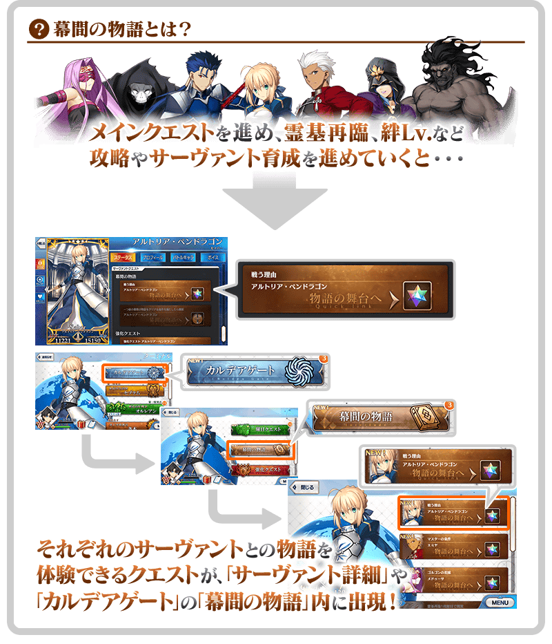
|
◆關卡通過報酬◆ |
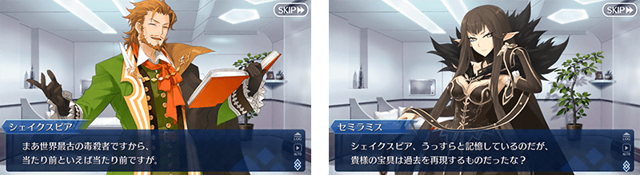
|
◆關卡通過報酬◆ |
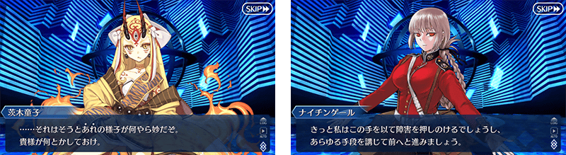
|
◆關卡通過報酬◆ |
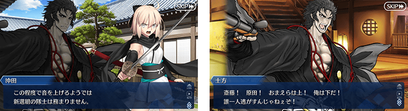
| 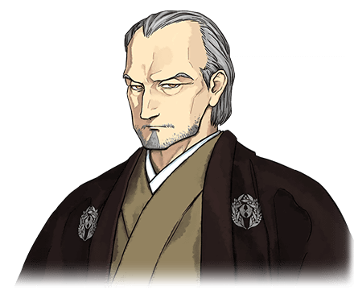 |
◆關卡通過報酬◆ |

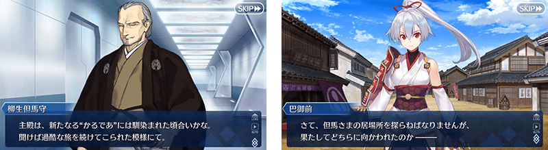
|
◆關卡通過報酬◆ |
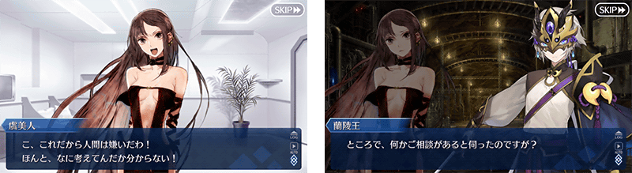
| 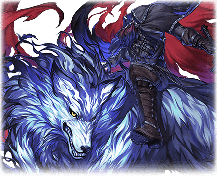 |
◆關卡通過報酬◆ |
在文字自動推送的功能可以「調整等待時間來配合訊息文字數」！
在文字冒險部份的文字推送設定成「AUTO」的情況，切換至下個訊息前的等待時間，變得可根據顯示的文字數做調整。
・固定等待時間:
可調整下個文字顯示前的「未依靠文字數的等待時間」。
・可變等待時間:
可調整下個文字顯示前的「配合文字數的等待時間」。
文字自動推送的等待時間＝固定等待時間＋可變等待時間×訊息文字數
◆追加時間◆
2019年3月20日(三) 17:00～
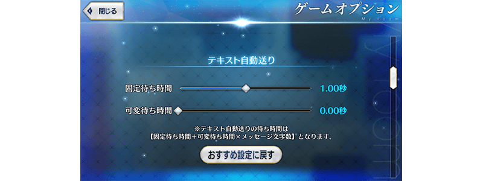
在概念禮裝的篩選器追加「效果篩選器」功能！
在概念禮裝的篩選器新追加「效果篩選器」。根據於此，變得容易找持有「攻擊力提升」「NP獲得」等特定效果的概念禮裝。
◆追加時間◆
2019年3月20日(三) 17:00～
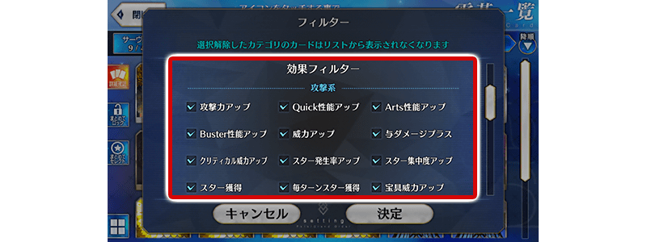
在隊伍編成畫面概念禮裝變得也可靠拖曳變更配置！
在「MENU」＞「編成」的隊伍編成畫面、以及關卡開始前等的隊伍確認畫面中，點擊「配置變更」鍵時，變得跟Servant同様地也可靠拖曳變更概念禮裝配置。
◆追加時間◆
2019年3月20日(三) 17:00～
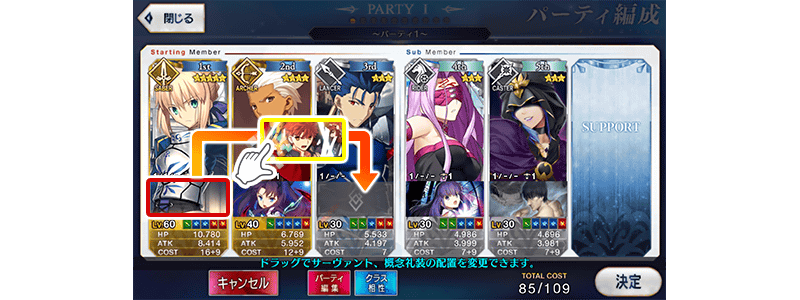